Project 4
Part A: Image Warping and Mosaicing
In this part I take photos from a fixed point, recover the homographies between them from point correspondences, warp them with inverse warping, and blend them into mosaics.
A.1: Shooting the pictures
For each set I stood in one place and rotated the phone between shots, keeping a large overlap between neighboring photos.
Kitchen
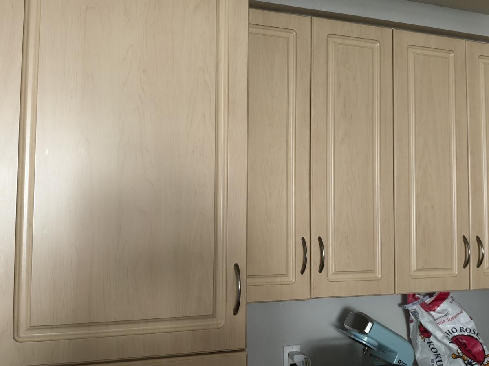
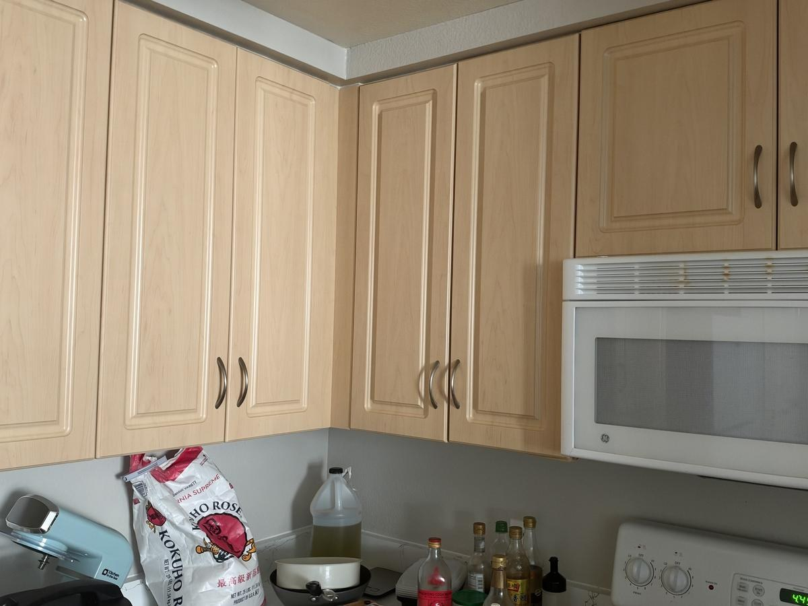

Gate


Courtyard
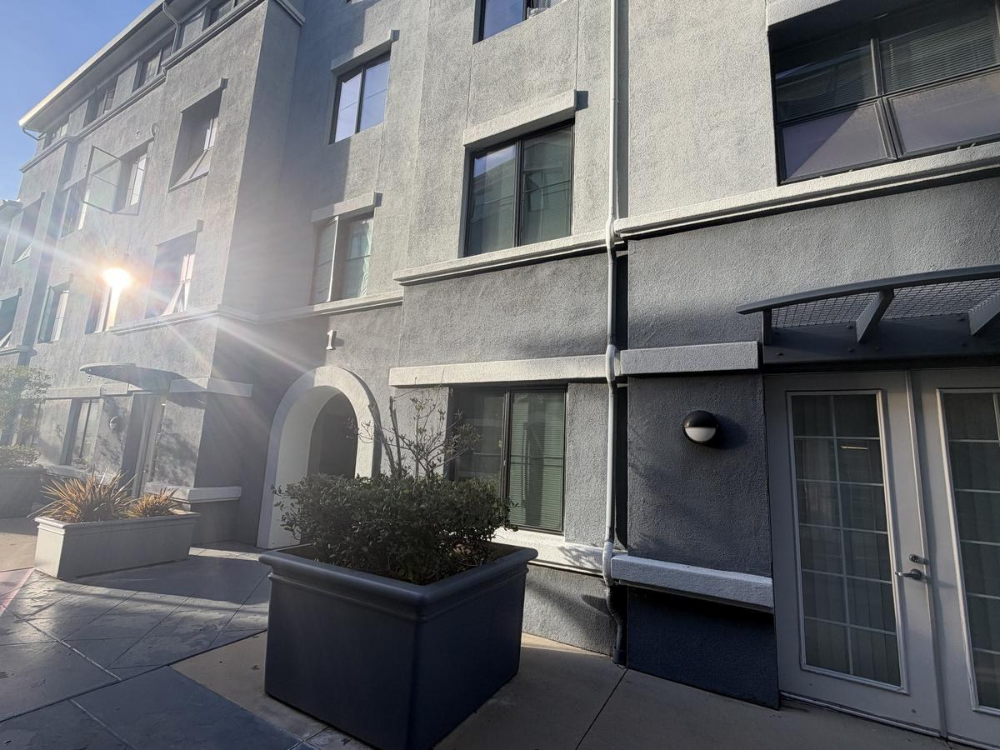

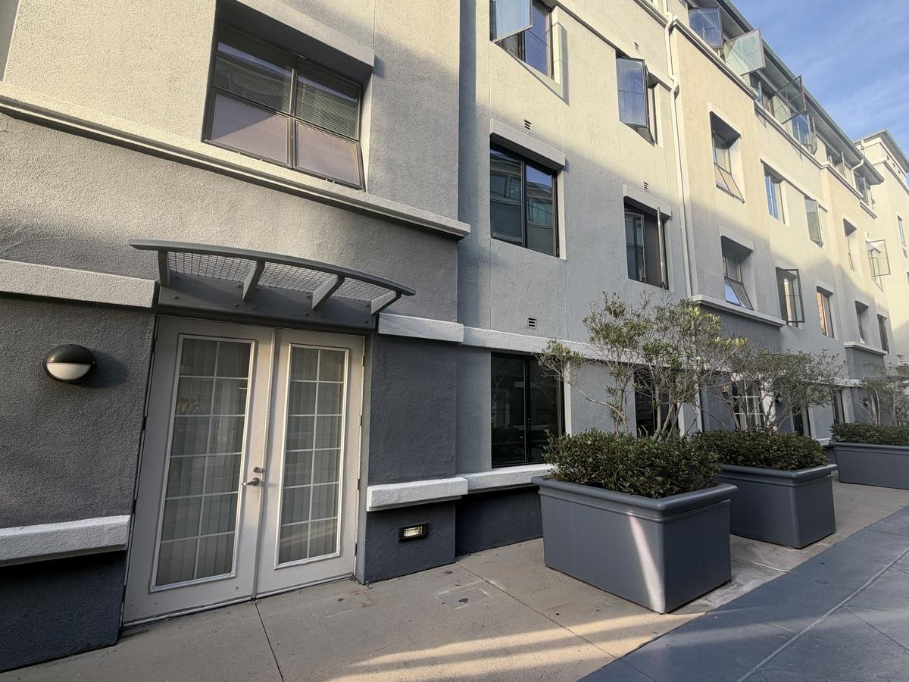
A.2: Recovering homographies
A homography maps a point (x, y) to (x', y') with p' = Hp, where H is 3×3 and H[2,2] = 1, leaving 8 unknowns. Each correspondence gives two linear equations, so with n > 4 points I stack them into a 2n × 8 system Ah = b and solve it with least squares.
[x y 1 0 0 0 -x·x' -y·x'] h = x'
[0 0 0 x y 1 -x·y' -y·y'] h = y'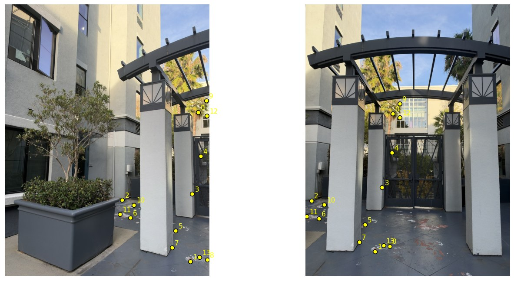
The two rows for the first correspondence, (850.84, 475.69) → (384.96, 481.59), with b in the last column:
[ 850.84 475.69 1 0 0 0 -327539.37 -183121.62 | 384.96 ]
[ 0 0 0 850.84 475.69 1 -409756.04 -229087.55 | 481.59 ]Recovered homography (mean reprojection error 0.81 px):
[[ 1.55712 -0.14000 -649.47803]
[ 0.46290 1.36083 -279.32039]
[ 0.00073 -0.00007 1.00000]]A.3: Warping the images
Both warps use inverse warping. I push the four corners of the image through H to get the output bounding box, then map every output pixel back through H⁻¹ to find where it comes from in the source. Nearest neighbor rounds that location to the closest pixel; bilinear takes a weighted average of the four surrounding pixels. Pixels that map outside the source get alpha 0.
For rectification I click the four corners of an object I know is rectangular and map them to a rectangle with the right aspect ratio.
Cabinet door
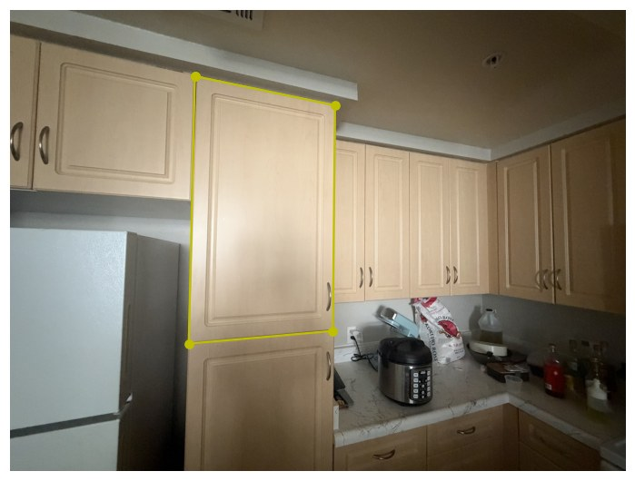

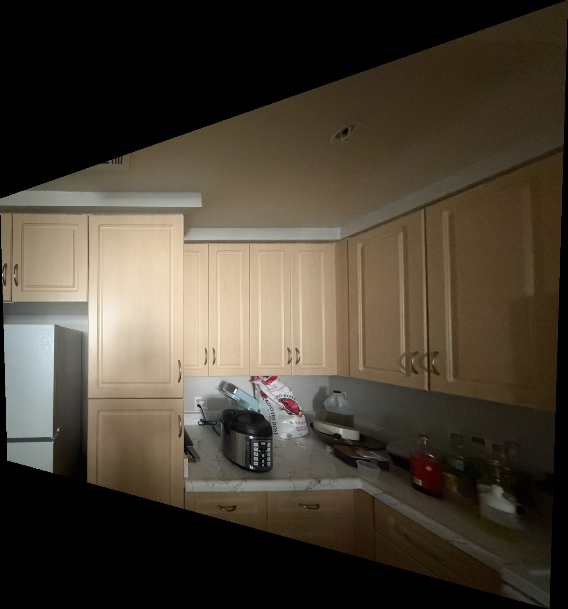
Window


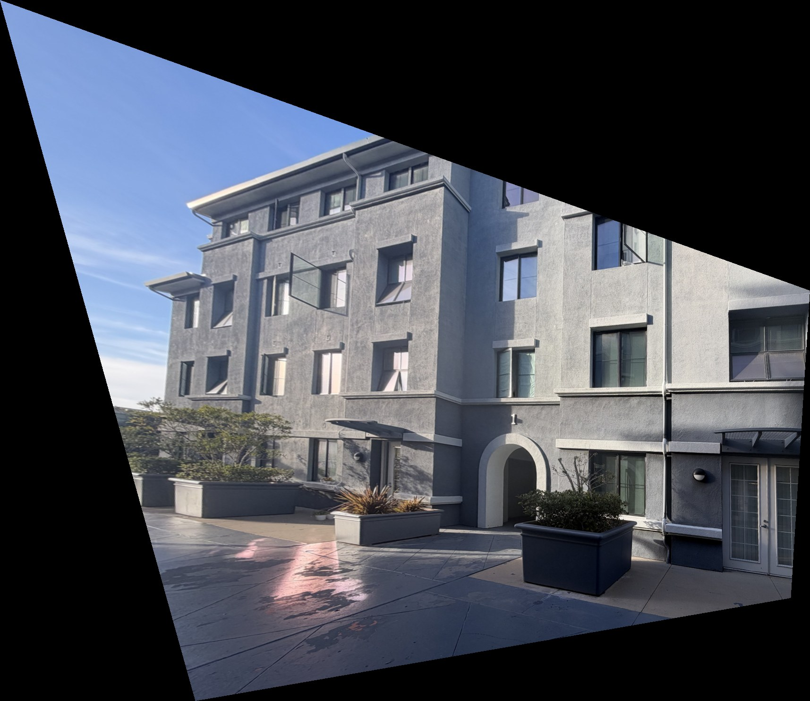
Nearest neighbor vs. bilinear
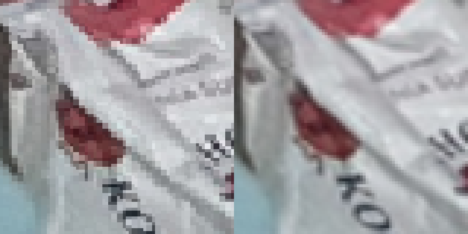
Nearest neighbor took 0.27 s and 0.21 s on the two images; bilinear took 0.53 s and 0.39 s, about twice as long because it reads four pixels and does extra arithmetic per output pixel. Nearest neighbor shows blocky, jagged edges where the image is stretched, while bilinear is smooth. Bilinear is slightly blurrier but looks much better, so I use it for the mosaics.
A.4: Blending into a mosaic
I keep the center image fixed and compute a homography from the left and right images into it. Pushing every image's corners through its homography gives the size of one shared canvas, and I warp all three images into it with bilinear interpolation. Each image also carries a weight that is 1 at its center and falls off linearly to 0 at its edges.
Plain weighted averaging leaves faint ghosting wherever the alignment is a pixel or two off, so I use a two-band blend. The low frequencies are a weighted average of all images, and the high frequencies come from whichever image has the largest weight at that pixel. This keeps the color transition smooth while edges stay sharp.
Kitchen
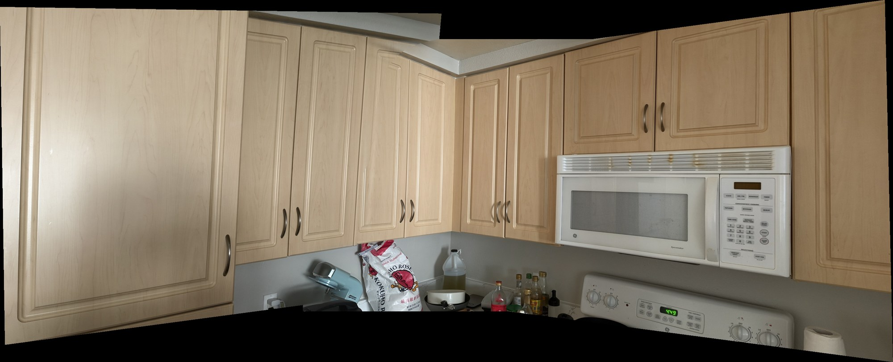
Gate
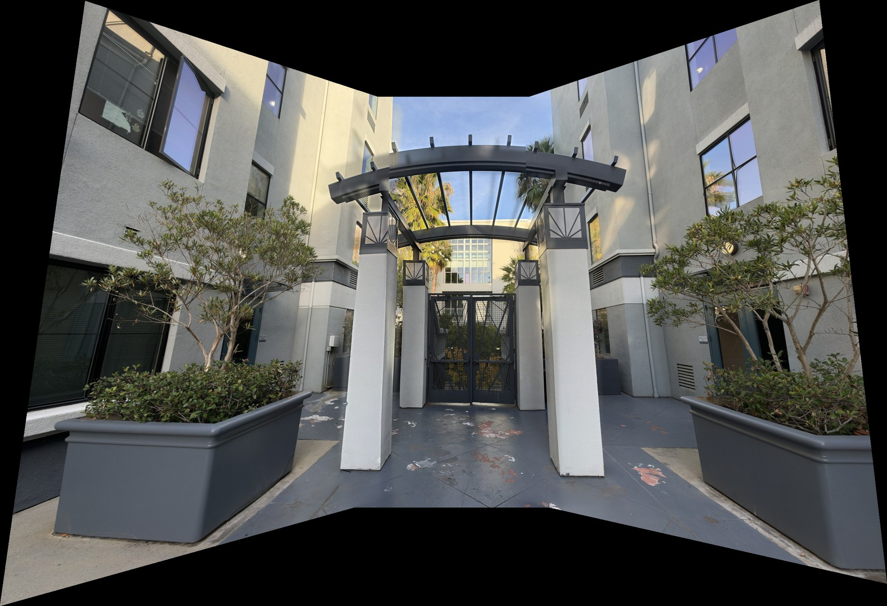
Courtyard
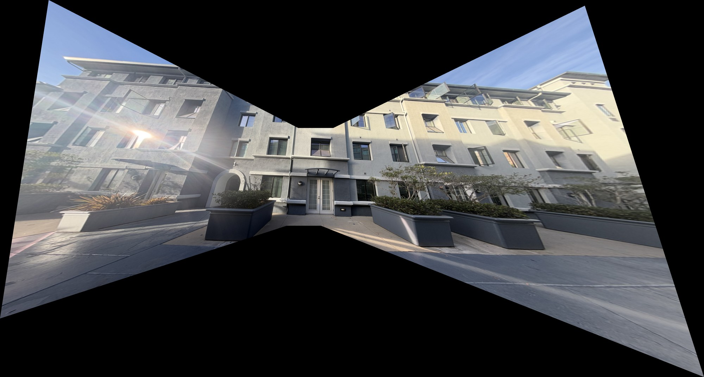
The courtyard was shot with the ultrawide lens, so the three photos cover a very wide angle. Projecting that onto a single plane stretches the left and right images heavily, which gives the bow-tie shape.